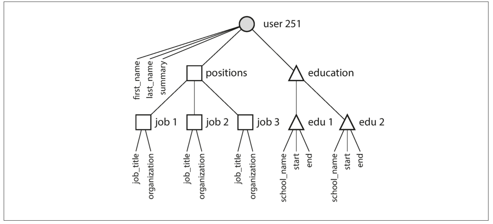
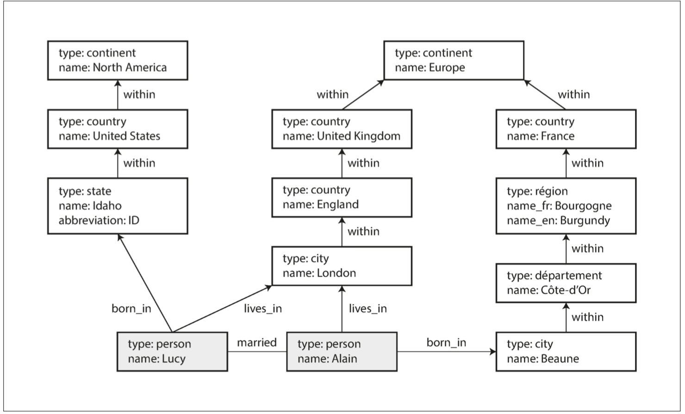

DDIA 阅读笔记第二章：数据模型与查询语言
摘要
本文是 DDIA 的第二章，介绍了常用的数据模型和查询语言。
笔者是阅读的英语原文，感觉能够有更深的理解和思考，不过阅读时间也会成倍增加，也会去发散地了解一些书中一笔带过的知识，补充在博客中。
根据维基百科的定义，数据模型是一种抽象模型，用于组织数据元素，标准化数据元素之间及与现实实体属性之间的关系。例如，数据模型可以指定一个汽车元素由许多其他数据元素组成，包含大小、颜色、所有者等。
多数应用使用层层叠加的数据模型构建。对于每层数据模型的关键问题是：它是如何用低一层数据模型来表示的？例如，一个应用中，从高到低的数据模型：
- 应用层：采用合适的数据结构，对业务对象进行表示（人员、货物、行为等）
- 模型层：选取存储数据结构的数据模型，例如 JSON、XML
- DB 层：数据库系统底层通过内存、磁盘、网络上的字节，表示数据模型，提供 CRUD 操作
- 硬件层：硬件存储：电流、光脉冲信号等
一个复杂的应用程序可能会有更多的中间层次，比如基于 API 的 API，不过基本思想仍然是一样的：每个层都通过提供一个明确的数据模型来隐藏更低层次中的复杂性。这些抽象允许不同的人群有效地协作（例如数据库厂商的工程师和使用数据库的应用程序开发人员）。
现在最著名的数据模型可能是 SQL。它基于 Edgar Codd 在 1970 年提出的关系模型。关系模型是采用二维表格结构表达实体类型及实体间联系的数据模型。数据被组织为关系，关系是元组（行）的集合。
今天在网上看到的大部分内容依旧是由关系数据库来提供支持，无论是在线发布，讨论，社交网络，电子商务，游戏，软件即服务生产力应用程序等等内容。
NoSQL
概念
- 通常指代 non-SQL，或者 non-relational。也被解释为 Not-Only SQL，用于强调在单一系统中使用多种数据存储，来满足变化的数据存取需求（polyglot-persistent）
- 常用数据结构：KV 键值对、列存储、图、文档
CAP 理论
CAP 理论：NoSQL 牺牲一致性，保证可用性和分区容错，和更好的性能
- 一致性（Consistency）：每次读取要么返回最新的写，要么返回错误
- 可用性（Availability）：每个请求返回非错响应，并不保证是最新的写
- 分区容错（Partition tolerance）：即使出现了任意的丢包或延迟，系统也可以持续工作
- CAP 至多取其二，如果一个请求出现了网络分区问题，系统必须选择：
- 丢弃该操作，影响可用性
- 继续操作，威胁一致性
BASE 一致性模型
放弃 ACID 强一致性，提供 BASE 一致性模型，参见 Eventual consistency：
- 基础可用性（Basically Available）：读取和写入操作尽可能可用（使用数据库集群的所有节点），但可能不一致（冲突协调后写入可能不会持续，读取可能不会获得最新的写入）
- 软状态（Soft state）：没有一致性保证，一段时间后，我们只有一定的概率知道状态，因为它可能还没有收敛
- 最终一致性（Eventually consistent）：分布式计算中用于实现高可用性的一致性模型，它非正式地保证，如果没有对给定数据项进行新的更新，最终对该项的所有访问都将返回最后更新的值。
- ACID 有酸的意思，BASE 有碱的意思，二者酸碱不容
选择 NoSQL 的原因
- 易于扩展：例如 KV 存储比关系存储更容易分布式部署，水平扩容
- 开源和免费
- 对特定查询支持的更好
- 提供动态、更具表现力的模型
然而 NoSQL 也有一些不足，一致性弱、对 join 支持差等。不同的应用有不同的数据存取需要，最优的技术选型也不能一概而论。但可预见的是，关系模型会与非关系模型继续共存。
对象关系不匹配
概念
- 多数应用是使用面向对象的概念编程，SQL 以关系存储模型
- 需要一个尴尬的中间层，完成二者之间的转换
- 这个问题也被称为阻抗不匹配（Object–relational impedance mismatch）
- 对象关系映射（Object-relational mapping，ORM）框架，例如 ActiveRecord、Hibernate 减少了转换层的模板代码开销，但还是不能掩盖二者的差异
一对多
一个例子是，使用关系模型存储一份如下的简历：
唯一标识符是 user_id，对于 first_name、last_name 这种唯一字段，可以建模为 user 表的列
而对于教育、职位等存在多个值的信息，通常有三种方式：
- 旧版 SQL，建立多张表，使用外键关联，如图上那样
- 使用 JSON、XML 等格式，存储单个字段
- 使用 JSON、XML 等格式，存储所有职位、教育等信息
虽然都可以达到存取效果，但是：
- 多表存储，就会导致查询时的多次查询或者复杂多表联合
- 一个字段存储符合值，违背了第一范式，也不利于细粒度的读取和检索
这就是阻抗不匹配的一个典型例子。如果是使用 JSON 存储整个简历的话：
- 更好的局部性：一次就可以读出所有的简历数据
- 灵活性：简历里可以灵活增删字段；关系模型中列的更改会导致全表修改，代价很大
这种阻抗不匹配，是因为简历中暗含了一个树结构，即一对多的关系，JSON 能更直观地表现这种结构。

多对一和多对多
上面的简历中，地区（region）和行业（industry）以 id 的形式关联 user，而非字符串。这种方式有如下优点：
- 一致的风格和拼写
- 避免重名歧义
- 易于更新：对人类有意义的字符串只存储在一处，其他地方引用的都是对人类无意义的 id
- 相反，如果存储在多处时，如果需要更新就有写传播的开销，而且威胁一致性
- 本地化支持：翻译多国语言
- 更好地搜索：region_id 对应的 region 可能标准化存储了国家、州等信息，可以方便搜索一个地区内部的某些简历
多对一
移除数据存储的冗余，例如将字符串多存储集中为存储到一处的过程，称为标准化（normalization）。
标准化地区、行业这种数据需要多对一关系：很多人可能生活在同一个地区、从事同一种行业。这不是很适用文档模型。
- 在关系模型里，引用其他表的 id 是很常见的，外键
- 文档模型对 join 通常较弱，因为这在一对多关系中并不需要
使用文档模型的应用，可能会在业务层做 join 操作。例如在内存里维护 id→字符串的映射，即使这种数据可能长时间不会变更，这也在业务层引入了额外的开销。
多对多
即使初始版本能够适配无 join 的文档模型，随着业务的发展和新特性的加入，数据趋向于变得越来越关联，例如简历要实现以下功能：
- 组织和学校作为实体，而非普通的字符串
- 用户可以给其他人的简历填写推荐语，推荐人的照片、姓名会一并展示出来
上面两种都是多对多关系

文档模型是否在重蹈覆辙？
多对多、join 的争论，并不是起于文档模型和 NoSQL，要更早。
1970s，最著名的数据库是 IBM 的信息管理系统（Information Management System，IMS），它使用层次模型，类似 JSON 的树状结构，能够处理一对多关系，但不能很好地处理多对多，不支持 join。
为了改进层次模型的缺陷，出现了：
- 关系模型：SQL 统治世界
- 网络模型：声名鹊起，到默默无闻
网络模型
由 Conference on Data Systems Languages 委员会提出，也被称为（CODASYL）模型
是层次模型的推广：
- 每条记录可以有多个父节点
- 比如 region 记录”Greater Seattle Area”，所有居住在这个 region 的人都会指向这个节点
- 以磁盘指针实现指向关联，而非外键
- 访问记录的唯一方法，是从根记录开始沿着一条访问路径（access path），移动游标（curosr）
- 最简单的情况下，访问路径类似遍历链表，从首元素开始，逐个遍历直到找到目标元素
- 但在多对多关系下，不同路径可能会指向同样的记录，程序员必须追踪所有访问路径，类似 N 维空间遍历
缺点：
- 手动编写的访问路径，虽然可以高效利用有限的硬件资源，但也使得查询和更新非常复杂且不灵活
- 想要对数据模型进行变更也是困难的
关系模型
很简单，关系就是一张表，元组的集合：
- 没有复杂的嵌套结构
- 没有复杂的访问路径，使用声明式的查询 SQL
- 通用的查询优化器（query optimizer）自动地对查询进行优化
- 相当于在自动搜索 “访问路径”
- 添加新特征很容易：新建了索引，优化器就会自动评估是否使用该索引
查询优化器很复杂，吸收了多年的科研和工业界的成果。但是核心在于，只需要构建一次通用的查询优化器，所有的关系查询都可以从中受益。
- 短期来看，手动调制优化的代码会更容易
- 长远来看，通用的优化器一定是更胜一筹的
与文档模型比较
文档模型 vs 层次模型
- 如果文档模型在父节点中存储嵌套记录（一对多关系），而不是单独的表，就会退化为层次模型，例如 positions、educations。
- 目前为止，文档模型还没有走层次模型的老路
文档模型 vs 关系模型
- 当处理多对一、多对多关系上，关系模型和文档模型并无本质不同，都是依赖于类似外键的唯一标识符，在读取时通过 join 或多次查询实现。
关系模型 vs 文档模型
先不讨论并发、故障恢复，只关注数据模型
文档模型优点：
- 模型（schema）灵活
- 局部性更好，减少查询 join 次数
- 贴近应用对象，阻抗不匹配问题小
关系模型优点：
- 良好的 join 支持
- 支持多对一、多对多关系
哪种模型下代码更简单
取决于业务特点
如果应用存在树形的文档结构，类似简历，选择文档模型可能是个好主意。对比之下，关系模型会按范式把数据拆分多份，再做连接拼接，比较笨重。
文档模型的缺陷：
- 不能直接访问文档的元素，需要编写访问路径，如果不是太深，也问题不大
- 不支持连接。
- 这可能会成为问题，也可能不会，取决于应用特点。例如，如果只是用一个文档模型记录时间 - 事件的分析型应用，可能永远用不到多对多关系。
然而，如果应用需要多对多关系，文档模型的吸引力会小很多。
- 虽然可以通过反标准化（denormalization）来避免 join，但是业务也需要额外成本维护一致性
- 多次查询模拟的 join，会比数据系统里精心实现的性能差很多（毕竟有查询优化大杀器在）
结论：对于高度关联的数据：
- 文档模型是糟糕的
- 关系模型是可接受的
- 图模型是最自然的
文档模型的模式灵活性
文档模型 / 关系模型支持的 JSON，通常不会强制约束数据的模型（schema），关系模型支持的 XML 可能提供可选的模式验证。没有强制的模式，意味着文档模型读取时可能读取到任意的键值。
- 有时被称为无模式（schemaless），但并不恰当
- 更准确的叫法为读时模式（schema-on-read）：数据的模式是隐含的，在读取时被解释
- 类似编程的动态类型检查
- 与之对应的是写时模式（schema-on-write）：数据的模式是显式的，在写入时验证，如关系数据库
- 类似编程的静态类型检查
读时模式和写时模式各有优劣，如同动态 vs 静态类型检查争论已久。二者的区别在于：
- 在模式需要发生变更时、或者元素的模式不一时，文档模型更加灵活。
- 在元素的模式统一时，模式可以提供使用的强制结构检查。
虽然关系数据库可以通过 Alter table 变更模式，一般在毫秒级完成。但是 Mysql 是个例外，Alter table 会拷贝整张表，可能导致数秒到分钟级的不可用
查询的局部性
文档模型的每次文档读都需要全量读取，写通常需要全量覆盖（除非文档大小不变，可以就地修改），因此适用于：
- 每次需要访问文档中的大部分内容
- 大文档的修改少；或者将大文档拆分为多个小文档，减少写成本
这些性能上的限制减少了文档模型的适用场景。查询的局部性也并非文档模型的专属，谷歌的 Spanner 数据库，Oracle 也有一些提高局部性的机制。
互相融合
大多数关系数据库，已经支持了 XML、JSON 这样的文档格式。另一方面，文档数据库 RethinkDB 支持了关系 join，MongoDB 支持了数据引用。
关系模型和文档模型的互相融合，使得开发人员可以结合二者的优势。
数据查询语言
可以分为声明式、命令式两类。
| 声明式（Declarative） | 命令式（Imperative） | |
|---|---|---|
| 简介 | 只声明想要的查询模式，不强制执行策略，由计算机自主选择合适的策略获取数据。 | 告诉计算机实现操作的特定流程和顺序，命令计算机逐行执行代码，完成操作。 |
| 例子 | SQL：只声明数据的条件（where）和数据转换（sort、group）等，由查询优化器决定如何实现查询。 | IMS、CODASYL：手动编写显式的 Access Path 实现查询 |
| 优点 | 查询模式简单准确、可读性好 | |
| 抽象层，隐藏了数据引擎细节，允许数据库在兼容下引入新的特性 | ||
| 自动查询优化，利于并行优化 | 执行过程的确定性 | |
| 灵活，允许开发人员手动优化，可能会取得更好的性能 | ||
| 缺点 | 查询优化无法保证能获取到最优执行计划 | 复杂、可读性差、数据引擎难以优化、难以自动并行执行 |
声明式 Web 查询
web 开发中也有类似场景。
CSS 也是通过声明式的方式，指定向哪些元素添加什么样的样式，但并不规定这些样式的添加方式。
JS 语言则可以通过 DOM API 实现类似的效果，使用脚本语言强制改变 DOM 节点的样式。
二者对比之下：
- 响应式：
- CSS 是响应式的，意味着当符合要求的元素新增 / 消失之后，样式自动添加 / 取消
- JS 则不是，需要通过监听事件、轮询等机制，才能实现
- 性能
- 短期内，手动优化的 js 可能性能更好
- 但声明式的 CSS 可以持续地从浏览器对 CSS 优化中收益
在浏览器中，使用 CSS 声明样式是比用 JS 手动实现好得多的。在数据系统中，使用声明查询语言 SQL 也比命令式查询好得多。
MapReduce 查询
MapReduce 是一种用于处理海量数据的编程模型，由谷歌推广。一些 NoSQL 数据库，例如 MongoDB、CouchDB 实现了一种阉割版的 NoSQL。
MongoDB 实现的 NoSQL 介于声明式和命令式之间，在整体声明式的框架下，存在 map 和 reduce 两个代码片段用于数据处理。map 和 reduce 必须是纯函数，内部不能执行其他的 query，这使得数据库可以灵活地以任意顺序、在任何地方执行查询，并可以安全重试。
图数据模型
关系模型可以处理多对多关系，但如果记录间的关系复杂且常见，使用图模型是最自然的。图模型由顶点（vertex）和边（edge）组成，适用于高端关联数据，例如：
- 社交图：顶点为人，边为人之间的社交行为
- web 图：顶点为网页，边为网页引用
- 路网图：顶点为连接点，边为道路
图模型不仅限于存储同类（homogeneous）数据，也可以用于存储不同类型的对象。例如 Facebook 就维护了一个很大的图模型，存储了人、位置、事件、打卡、评论等数据。
一个例子，可以从社交网络或系谱数据库中获得：它显示了两个人，来自爱达荷州的 Lucy 和来自法国 Beaune 的 Alain。他们已婚，住在伦敦。

属性图
在属性图模型中，每个顶点（vertex）包括：
- 唯一的标识符
- 一组 出边（outgoing edges）
- 一组 入边（ingoing edges）
- 一组属性（键值对）
每条 边（edge） 包括：
- 唯一标识符
- 边的起点 / 尾部顶点（tail vertex）
- 边的终点 / 头部顶点（head vertex）
- 描述两个顶点之间关系类型的标签
- 一组属性（键值对）
在图中，起点是 tail，终点是 head：
- 边通常用箭头表示，而箭头是从「尾」指向「头」的。
可以想象有两张关系表，分别存储顶点和边：
1 | CREATE TABLE vertices ( |
该模型的重要特征：
- 任意两个顶点间都可以相连，没有限制
- 给定顶点，可以高效找到入边和出边，进而遍历（关系表上加了索引）
- 通过使用不同的 label，可以在表中存储多样的数据，同时保持数据模型的简洁
这些特性为图模型带来了很大的灵活性。相反，如果是使用关系模型存储上面的图，就会遇到问题，例如不同国家的不同地区结构（法国有省和州，美国有不同的州和州），国中国的怪事（先忽略主权国家和国家错综复杂的烂摊子），不同的数据粒度（Lucy 现在的住所被指定为一个城市，而她的出生地点只是在一个州的级别）。
图模型的可演化性很好：可以持续地容纳和支持新的业务特性。
Cypher 查询语言
声明式，用于 Neo4j 图数据库，名字来自于电影，与密码学里的 cipher 无关
使用 cypher 创建上图的左半部分：
- 前四行是顶点，格式：名称：类别 属性集合
- 后两行的边，格式：(顶点名) - [: 边标签] → (顶点名)…
1 | CREATE |
如果想要查询，生于美国，居住在欧洲的人名，可以编写如下查询
1 | MATCH |
这是典型的声明式查询，数据库可以选择以下的执行计划：
- 遍历所有的人，返回符合条件的人
- 从终点美国和欧洲开始，找到所有的位置，再找符合关系的人交集
- …
如果是使用关系模型存储图模型，也可以使用 SQL 进行查询，但会困难很多。因为 [:WITHIN*0..] 可以很准确简洁地描述出：沿着 WITHIN 关系 0 或者多次这一条件，而在 SQL 中，需要编写复杂的递归查询才能实现。此外，join 的次数可能也无法预知。
三元组存储
由三元组表示，例如（Jim, likes, bananas）
- 主语：subject，属性图中的顶点
- 谓语：predicate
- 宾语：object，二者之一
- 数据类型原始值，例如 integer、string。此时，三元组等价于属性图中的属性。
- 另一个顶点。此时谓语就是一条边。
RDF（Resource Description Framework）模型就使用了三元组存储，构建语义网络。虽然语义网络已经夭折了。
SPARQL 语言可用于查询 RDF，语法类似 Cypher，例如，查询上面的例子，生于美国，居住在欧洲的人名：
1 | PREFIX : <urn:example:> |
对比网络模型
网络模型（CODASYL）和图模型看起来很像，但它们是很不同的：
- CODASYL 存在 schema 限制了记录间关联嵌套关系，图模型则没有，更灵活
- CODASYL 只能通过访问路径访问记录，图模型则可以通过唯一标识符或索引值快速定位节点
- CODASYL 中记录的子节点是有序的，这给存储、维持有序性带来了额外开销。图模型中的顶点、边都是无序的。
- CODASYL 只支持命令式查询，复杂、容易被破坏。而图模型既支持命令式查询，也支持高级的声明式查询，例如 Cypher、SPARQL。
基础：Datalog
Datalog 是比 SPARQL、Cypher 更古老的语言，在 20 世纪 80 年代被学者广泛研究，为以后的查询语言提供了基础。
Datalog 使用类似三元组的存储，不同的是，把三元组写成 谓语（主语，宾语），例如
1 | name(namerica, 'North America'). |
同样，查询美国移民欧洲的人：
1 | within_recursive(Location, Name) :- name(Location, Name). /* Rule 1 */ |
Datalog 可以定义规则来辅助查询，类似函数，其中：
- 大写开头的是变量名
- 谓语代表匹配规则
- 只有:- 右侧所有规则都匹配，整个规则才匹配
这种定义规则的方式，虽然不如 Cypher 看起来简单直接，但对于复杂的查询，能够更好地处理。
总结
数据模型是一个巨大的课题，在本章中，我们快速浏览了各种不同的模型。
在历史上，数据最开始被表示为一棵大树（层次数据模型），但是这不利于表示多对多的关系，所以发明了关系模型来解决这个问题。最近，开发人员发现一些应用程序也不适合采用关系模型。新的非关系型 “NoSQL” 数据存储分化为两个主要方向：
- 文档数据库：主要关注自包含的数据文档，而且文档之间的关系非常稀少。
- 图形数据库：用于相反的场景：任意事物之间都可能存在潜在的关联。
这三种模型（文档，关系和图形）在今天都被广泛使用，并且在各自的领域都发挥很好。一个模型可以用另一个模型来模拟 —— 例如，图数据可以在关系数据库中表示 —— 但结果往往是糟糕的。这就是为什么我们有着针对不同目的的不同系统，而不是一个单一的万能解决方案。
文档数据库和图数据库有一个共同点，那就是它们通常不会将存储的数据强制约束为特定模式，这可以使应用程序更容易适应不断变化的需求。但是应用程序很可能仍会假定数据具有一定的结构；区别仅在于模式是明确的（写入时强制）还是隐含的（读取时处理）。
每个数据模型都具有各自的查询语言或框架，我们讨论了几个例子：SQL，MapReduce，MongoDB 的聚合管道，Cypher，SPARQL 和 Datalog。我们也谈到了 CSS 和 XSL/XPath，它们不是数据库查询语言，而包含有趣的相似之处。
虽然我们已经覆盖了很多层面，但仍然有许多数据模型没有提到。举几个简单的例子：
- 使用基因组数据的研究人员通常需要执行 序列相似性搜索，这意味着需要一个很长的字符串（代表一个 DNA 序列），并在一个拥有类似但不完全相同的字符串的大型数据库中寻找匹配。这里所描述的数据库都不能处理这种用法，这就是为什么研究人员编写了像 GenBank 这样的专门的基因组数据库软件的原因【48】。
- 粒子物理学家数十年来一直在进行大数据类型的大规模数据分析，像大型强子对撞机（LHC）这样的项目现在会处理数百 PB 的数据！在这样的规模下，需要定制解决方案来阻止硬件成本的失控【49】。
- 全文搜索 可以说是一种经常与数据库一起使用的数据模型。信息检索是一个很大的专业课题，我们不会在本书中详细介绍，但是我们将在第三章和第三部分中介绍搜索索引。